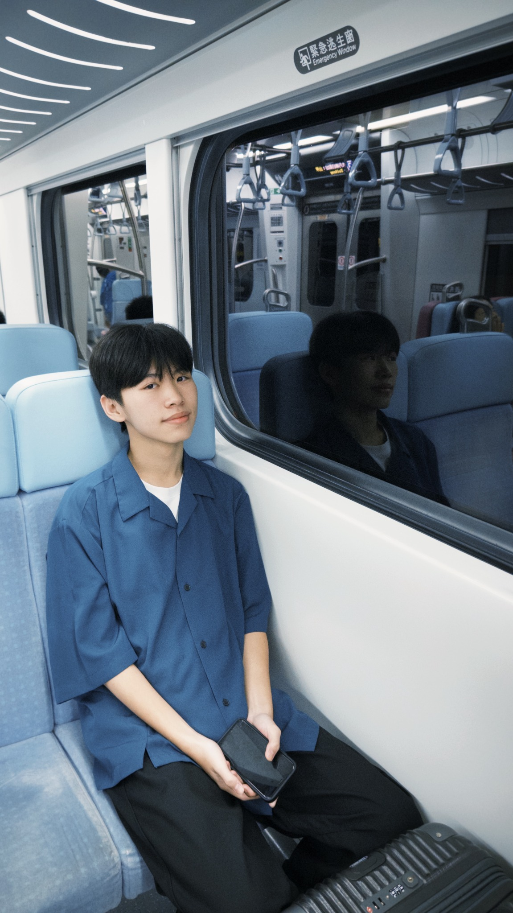

A LITTLE
ABOUT ME
ABOUT ME

01 / 03DESIGN · TRAVEL · LIFE
01 — ABOUT ME
關於我.
THIS IS ME
HELLO, NICE TO MEET YOU.
吳昕叡
南臺科技大學
視覺傳達設計系・商業設計組
我對視覺與生活中的美感充滿好奇，喜歡透過觀察、體驗與探索累積靈感。對我來說，旅行不只是抵達目的地，更是發現新事物、感受不同樣貌的過程。
NAME吳昕叡
DEPARTMENT視覺傳達設計系
GROUP商業設計組
02 — MY INTERESTS
興趣相簿.
喜歡遊山玩水，把沿途遇見的風景收藏成生活中的小小紀念。
點擊照片，放大欣賞 ✳
THANK YOU FOR VISITING
每一段旅程，
都是新的靈感。
吳昕叡 · 個人履歷
BACK TO TOP ↑